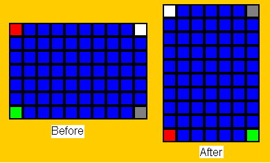

David Kosbie
Carnegie Mellon University
koz@cmu.edu
This is generally the most difficult part of the project:
in response to up-arrow key presses, we should rotate the falling piece 90
degrees counterclockwise. We do this in the same way we handled other
changes to the falling piece: we make the change, test if it is legal,
and if it is not, we unmake the change.
Explaining rotateFallingPiece:
As noted, this function (which takes one parameter, data)
is similar to moveFallingPiece, in that it makes the
rotation and then calls fallingPieceIsLegal (the same function used by
moveFallingPiece) and undoes any illegal changes. As for the actual
rotation, this is accomplished by changing the two-dimensional list of
booleans that represent the falling piece. A new 2d list is created,
and cells in the old list are mapped to cells in the new list according to a 90-degree
counterclockwise rotation. To see how this works, consider this
picture, which shows a grid that is rotated counterclockwise (the corners
are highlighted to make the rotation clear):

[To avoid any confusion, note that it would not be possible to generate
these particular boards during an actual Tetris game.]
First, we see that the dimensions reverse: in this example, the old
grid was 7 rows by 10 columns, whereas the new grid is 10 rows by 7 columns.
Next, consider what happens as we move in the old grid from red to green
(that is, moving downward with rows increasing from 0 to 6): this maps
in the new grid to moving across with columns increasing from 0 to 6 .
Thus, our new column is equal to our old row. That is the
easier dimension. Now consider the other dimension, as we move in the
old grid from red to white (that is, moving across with columns increasing
from 0 to 9: this maps in the new grid to moving up with rows
decreasing from 9 to 0. Thus, our new row is equal to (9
minus our old column). More generally, we replace "9" with "one
less than the number of old columns".
Writing rotateFallingPiece:
Following the plan just described, we start by storing the old piece
(the 2d list of booleans), its location, and its dimensions in local
variables (because we may need these to undo our move if it turns out
to be illegal). Next, we compute the new dimensions, by reversing
the old dimensions.
Next, we compute the new location. Our goal is to keep the center of
the falling piece constant (or, given that this is not possible if we have
an even number of rows or columns, to keep the center as constant as possible).
Keeping the center of the falling piece constant during rotation is the
most difficult part of Tetris,
so read this part very carefully (though that is always good advice!).
Besides making rotation more intuitive, we want to keep the center
constant so that if we rotate around and around, the center does not
"drift" -- a full 360 degree turn should bring us back to where we
started.
To make this happen, we observe that the center row of the falling piece
can be computed as the sum of its top row plus half its height in rows.
That is:
centerRow = fallingPieceRow + fallingPieceRows/2
Now, we actually have two pieces -- the old falling piece, before the rotation,
and the new falling piece, after the rotation. We can compute each of
their centers as such:
oldCenterRow = oldRow + oldRows/2
newCenterRow = newRow + newRows/2
Note that oldRows and newRows are not the same, since the dimensions change
when the piece is rotated. In any case, to keep the old and new centers
the same, we just set oldCenterRow equal to newCenterRow in the equations
above. Then we solve for newRow, and that gives us the new value
for fallingPieceRow. Repeat for the columns, and voila!
At that point, we have
the new location and dimensions, so we create an entirely new piece (that is, a
new 2d list of booleans) and load it with a rotation of the old piece
according to the algorithm described above, then set fallingPiece equal to
this new 2d list.
Finally, we check if this rotation makes the falling piece go off the
board or collide with a non-empty cell on the board (simply reusing our
code from the previous steps, where we wrote a function that tests if
the current board is legal or not), and if either of these conditions
occurs, we restore the piece, its location, and its dimensions to their
original values.
Updating keyPressed:
We modify keyPressed to call rotateFallingPiece in response to
an up-arrow key press.
Testing the code
Hint: Remember to press the up-arrow key to rotate the falling piece
(and try to move it off the board!), and to press some non-arrow keys to
start with new falling pieces to test the code! Verify that the piece
rotates counterclockwise, that the center basically stays fixed, and in
particular that a 360 degree turns result in no change to the falling piece.
|
|
David Kosbie |